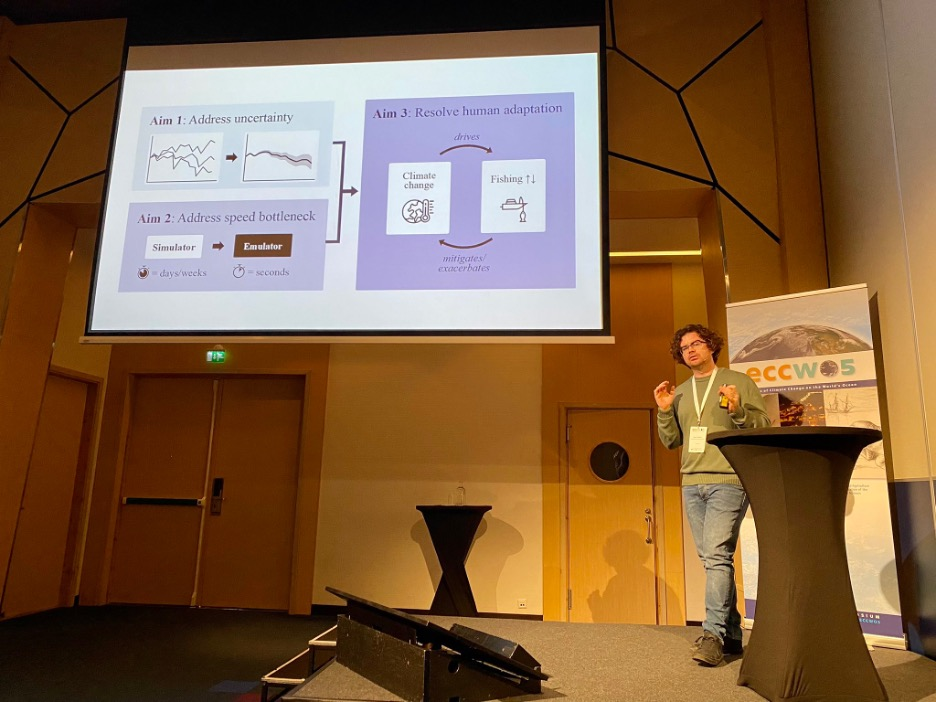

Bergen: Fish-MIP at ECCWO5 by Andrea Bryndum-Buchholz

Fish-MIP coordinators and modelers at ECCWO5.
This spring, Fish-MIP coordinators and modellers descended on the beautiful city of Bergen, on Norway’s west coast. Contrary to everyone’s believe, the sun was shining and stayed with us all week. The occasion that brought us together — the 5th Symposium on the Effects of Climate Change on the World’s Ocean. At this symposium, scientists from all corners of the world highlighted the latest information on how oceans are changing, the inherent risks that come with those changes, and strategies for increasing climate resilience, mitigation, and adaptation.
A busy week lay ahead. Fish-MIP members organized several sessions during the conference, each with their own purpose and venue. Fish-MIP convened an all-day session on the Advances in coupling regional climate and social-ecological models to improve climate-ready ecosystem management, which highlighted current approaches and identified critical gaps for coupling climate models to regional social-ecological systems. Ryan Heneghan, FishMIP modeller (ZOOMSS) and keynote speaker for this session, presented his thoughts on Fish-MIP projections, uncertainties, grand challenges, and solutions to make climate change model simulations more equitable. Other session speakers, presented on modeling efforts that integrate climate impacts across spatial and temporal scales, and emphasized approaches to incorporate statistically or dynamically downscaled climate projections into single species, food web, and social-ecological projections. As part of this session, research posters were displayed during an evening poster session, that showed some of the latest, applied science using global Fish-MIP projections.

Ryan Heneghan giving his keynote talk at ECCWO5 (Image by Tyler D. Eddy)
To mix the heavy science up a bit, Fish-MIP held a special information session during one of the scrumptious lunches at the conference hotel. The room was packed with known and unknown faces to learn more about FishMIP and out upcoming species collection “Past and Future Marine Ecosystems” in Earth’s Future celebrating the 10 years anniversary of Fish-MIP. Old and new coordinators introduced themselves to the room and highlighted the many benefits of being part of FishMIP. To name a few — high-impact publications (e.g., Nature Climate Change, PNAS, Nature Ecology Evolution, Global Change Biology), contributing to global climate and biodiversity policy efforts (e.g., IPCC, IPBES), supportive and amazing collaborators from across the globe, international workshops, and fun.
ECCWO5 was a fruitful week, full of great questions and deep discussions. We left Bergen, having met new collaborators and with new ideas in our heads and smiles on our faces, looking forward to our next meeting in Hawaii.